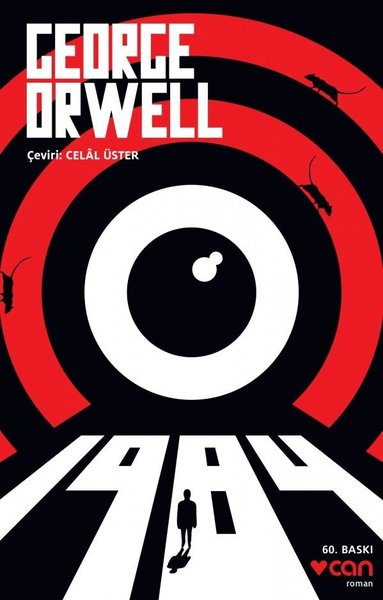

Books and More
1)Predictably Irrational

Why do our headaches persist after we take a one-cent aspirin but disappear when we take a fifty-cent aspirin?
Why do we splurge on a lavish meal but cut coupons to save twenty-five cents on a can of soup?
When it comes to making decisions in our lives, we think we're making smart, rational choices. But are we?
In this newly revised and expanded edition of the groundbreaking New York Times bestseller,
Dan Ariely refutes the common assumption that we behave in fundamentally rational ways.
From drinking coffee to losing weight, from buying a car to choosing a romantic partner,
we consistently overpay, underestimate, and procrastinate.
Yet these misguided behaviors are neither random nor senseless.
They're systematic and predictable—making us predictably irrational.
If you want to buy this book please click
2)Cesur Yeni Dünya

"Brave New World" takes us to "632 after Ford".
The brave people of this world are produced at the London Central Incubation and Conditioning Center,
"Brave New World" takes us to "632 after Ford". The brave people of this world are produced at the London Central Incubation and Conditioning Center,
which says "Community, Identity, Stability" at the door. "Motherhood" and "paternity" are seen as pornographic concepts, since the fertilization of women is forbidden and shameful,
"conditioning is provided by hypnopedia - the main assurance of social stability." The importance of the "Brave New World" is not only about setting a standard for its successors, but also for the strong depiction of a pessimistic future design,
as well as for a "rugged adventure of an individual-destroying adventure." good literature 'category."Brave New World" takes us to "632 after Ford". The brave people of this world are produced at the London Central Incubation and Conditioning Center,
which says "Community, Identity, Stability" at the door. "Motherhood" and "paternity" are seen as pornographic concepts,
since the fertilization of women is forbidden and shameful, "conditioning is provided by hypnopedia - the main assurance of social stability."
The importance of the "Brave New World" is not only about setting a standard for its successors, but also for the strong depiction of a pessimistic future design, as well as for a "rugged adventure of an individual-destroying adventure." good literature 'category.which says "Community, Identity, Stability" at the door.
"Motherhood" and "paternity" are seen as pornographic concepts, since the fertilization of women is forbidden and shameful, "conditioning is provided by hypnopedia - the main assurance of social stability." The importance of the "Brave New World" is not only about setting a standard for its successors,
but also for the strong depiction of a pessimistic future design, as well as for a "rugged adventure of an individual-destroying adventure." good literature 'category.
If you want to buy this book please click
3)Rise of The Robots

Intelligent algorithms are already well on their way to making white collar jobs obsolete:
travel agents, data-analysts, and paralegals are currently in the firing line.
In the near future, doctors, taxi-drivers and ironically even computer programmers are poised to be replaced by 'robots'.
Without a radical reassessment of our economic and political structures, we risk the very implosion of the capitalist economy itself.
In Rise of the Robots, technology expert Martin Ford systematically outlines
the achievements of artificial intelligence and uses a wealth of economic data to illustrate the terrifying societal implications.
From health and education to finance and technology, his warning is start - all jobs that are on some level routine are like to eventually be automated,
resulting in the death of traditional careers and a hollowed-out middle class.
The robots are coming and we have to decide now whether the future will bring prosperity or catastrophe.
If you want to buy this book please click
4)1984

Among the seminal texts of the 20th century, Nineteen Eighty-Four is a rare work that grows more haunting as its futuristic purgatory becomes more real. Published in 1949, the book offers political satirist George Orwell's nightmarish vision of a totalitarian, bureaucratic world and one poor stiff's attempt to find individuality. The brilliance of the novel is Orwell's prescience of modern life--the ubiquity of television, the distortion of the language--and his ability to construct such a thorough version of hell. Required reading for students since it was published, it ranks among the most terrifying novels ever written.
If you want to buy this book please click